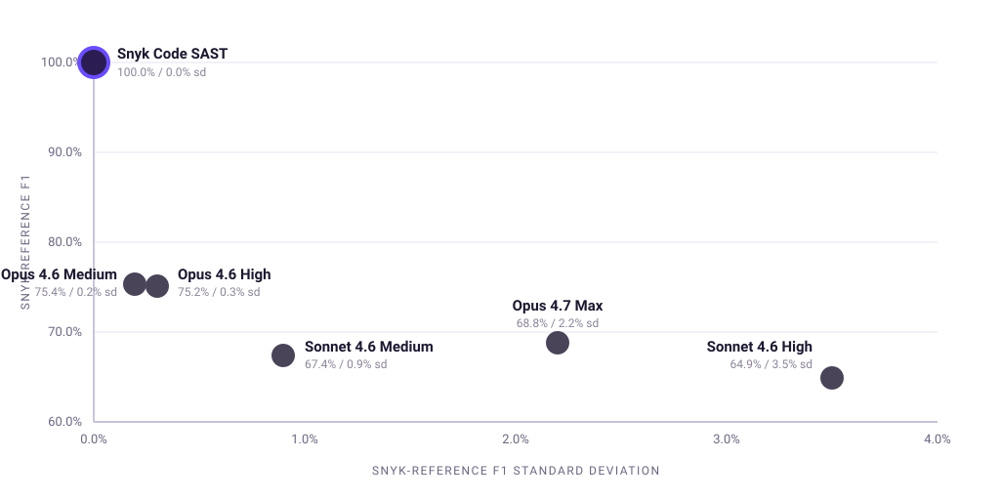

Аннотация
Авторы прогнали 300 повторных сканов на поиск уязвимостей, чтобы измерить, насколько воспроизводимо агентное ревью безопасности на основе LLM на одном и том же JavaScript-коде, промпте и тестовой «обвязке» бенчмарка. Главный результат: находки LLM по безопасности воспроизводимы неравномерно. Находки, совпадающие с эталоном, были стабильными, а вот «дополнительные» отчёты модели сильно варьировались от прогона к прогону.
В 250 прогонах модели 80 из 161 уникальной несовпавшей находки появились лишь в одной из пяти идентичных повторений, и только 22 - во всех пяти. Напротив, когда Claude совпадал с эталонной находкой Snyk Code, поведение было гораздо стабильнее: 134 из 158 уникальных совпавших с эталоном находок появлялись во всех пяти повторениях.
Бенчмарк также демонстрирует взаимодополняемость подходов. Модели стабильно находили знакомые, «громкие» паттерны эксплуатации, а в одном случае выявили вероятный пробел в продукте Snyk Code. При этом статический анализ безопасности (SAST) Snyk Code был детерминированным и лучше систематически перечислял повторяющиеся приёмники потоков данных (data-flow sinks). Результаты поддерживают комбинирование агентного LLM-ревью с детерминированным SAST, а не рассмотрение одной техники как замены другой.
1. Введение
Агентные кодовые системы уже стали частью повседневной разработки: они пишут код, редактируют pull request'ы, объясняют изменения и проводят ревью безопасности ещё до того, как код увидит человек. Поэтому надёжность становится ключевым продуктовым вопросом: если агент дважды видит один и тот же уязвимый код, найдёт ли он одни и те же уязвимости?
SAST-инструменты детерминированы - на одинаковом коде они дают одинаковый результат. LLM, напротив, способны понимать незнакомый код, объяснять риски и находить то, что пропускает статический анализ, но при этом выдают разные результаты между запусками, могут «шуметь» и иногда замечают лишь один пример из повторяющегося паттерна. Snyk VulnBench JS 1.0 создан, чтобы измерить это в контролируемых условиях.
Ключевые результаты
- Лучший LLM нашёл только 81% эталонных уязвимостей.
- Лучший показатель F1 - 75.4% (отставание от SAST на 24.6 процентного пункта).
- Почти 50% находок LLM вне эталона появляются только в одном запуске из пяти.
- Самый «полный» LLM оказался и самым шумным: 41% его находок - вне эталона.
- На крупном приложении лучший LLM показал всего 40% F1 и регулярно пропускал path traversal (обход каталога) и ограничения ресурсов (resource limits).
2. Методология
2.1. Бенчмарк
10 JavaScript-проектов на фреймворке Express, 44 эталонные уязвимости Snyk Code, 6 конфигураций (SAST и разные версии Claude), по 5 повторов каждого задания - всего 300 запусков. Все модели получают одинаковый промпт, возвращают ответ в формате JSON и не видят эталонный файл.
2.2. Оценка
Основная метрика - Snyk-reference F1. Важная деталь: совпадение засчитывается по типу уязвимости и не требует совпадения файла, строки, severity (критичности) или потока данных (data-flow). Это метрика согласия с эталоном, а не абсолютной точности.
3. Результаты
3.1. Воспроизводимость LLM зависит от конфигурации
SAST даёт 100% F1 при нулевой вариации. У LLM наблюдается разброс и по точности, и по стабильности; лучшая конфигурация - Claude Opus 4.6 Medium с 75.4% F1 и низкой вариативностью (рис.1). Ключевой паттерн: «истинные» уязвимости находятся стабильно, а дополнительные находки нестабильны. Так, 80 из 161 уникальной «лишней» находки появляются лишь однажды.
| Конфигурация | Snyk-reference F1 | Стандартное отклонение |
|---|---|---|
| Snyk Code (SAST) | 100.0% | 0.0% |
| Claude Opus 4.6 Medium | 75.4% | 0.2% |
| Claude Opus 4.6 High | 75.2% | 0.3% |
| Claude Opus 4.7 Max | 68.8% | 2.2% |
| Claude Sonnet 4.6 Medium | 67.4% | 0.9% |
| Claude Sonnet 4.6 High | 64.9% | 3.5% |
3.2. Взаимодополняемость LLM и SAST
LLM хорошо находят command injection (внедрение команд), SQL injection (SQL-инъекции), hardcoded credentials (захардкоженные учётные данные), SSRF (подделку запросов на стороне сервера), XSS (межсайтовый скриптинг) и open redirect (открытые перенаправления). Слабее даются ограничения ресурсов, санитизация ввода, проверка типов, небезопасный транспорт и path traversal (обход каталога), особенно повторяющийся.
Пример ошибки: модель сообщает о «SQL-инъекции» там, где нет реального приёмника исполнения (execution sink), - это ложноположительный результат. Пример полезного сигнала: LLM нашли SQL-инъекцию вне эталона, что указывает на вероятный пробел в Snyk Code.
3.3. Проблема повторяемости
Около 50% уникальных находок LLM появляются только в одном запуске и лишь 14% - во всех пяти. Практический эффект: разработчик получает разный результат анализа при каждом запуске.
3.4. Стоимость не равна качеству
Claude Opus 4.7 Max обходится в 5.7 раза дороже и тратит в 1.9 раза больше токенов, но показывает результат хуже, чем Opus 4.6 Medium.
4. Обсуждение
Ограничения работы: эталоном выступает Snyk Code (а не абсолютная истина), проекты упрощены, полной эталонной разметки (ground truth) нет, а схема подсчёта совпадений упрощена.
5. Вывод
LLM полезны для ревью безопасности, но не являются воспроизводимыми. Ключевой инсайт: совпадающие с эталоном уязвимости стабильны, а дополнительные находки шумны и непредсказуемы.
Главный вывод - LLM и SAST нужно использовать вместе, потому что они находят разные классы проблем и имеют разные слепые зоны.
Один и тот же LLM-ревьюер может найти разные баги в одном и том же коде.
Это неприятная правда для команд, которые заменяют инженерную проверку текстовым ответом модели. Veai снижает такую случайность: агент использует детерминированные факты JetBrains IDE - дерево проекта, зависимости, статанализ, сборку и тесты, - поэтому ревью становится воспроизводимым процессом, а не лотереей промптов.
Перевод подготовлен технической командой Veai на основе arXiv:2606.15762. Первоисточник (англ.): arxiv.org/abs/2606.15762.